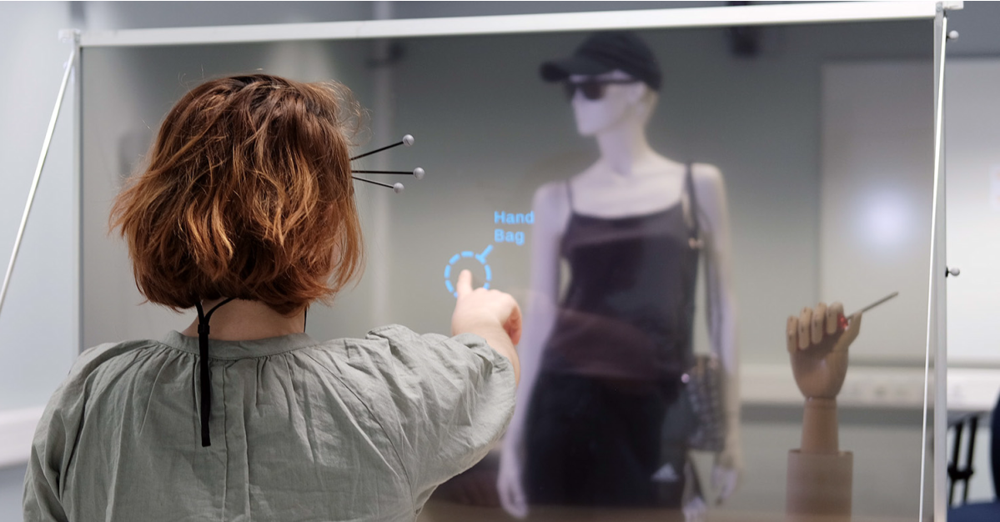

Selection at a Distance through a Large Transparent Touch Screen

Venue. TVCG (2025)
Abstract. Large transparent touch screens (LTTS) have recently become commercially available. These displays have the potential for engaging Augmented Reality (AR) applications, especially in public and shared spaces. However, the interaction with objects in the real environment behind the display remains challenging: Users must combine pointing and touch input if they want to select objects at varying distances. There is a lot of work on wearable or mobile AR displays, but little on how users interact with LTTS. Our goal is to contribute to a better understanding of natural user interaction for these AR displays. To this end, we developed a prototype and evaluated different pointing techniques for selecting 12 physical targets behind an LTTS, with distances ranging from 6 to 401 cm. We conducted a user study with 16 participants and measured user preferences, performance, and behavior. We analyzed the change in accuracy depending on the target position and the selection technique used. Our fndings include: (a) Users naturally align the touch point with their line of sight for targets farther than 36 cm behind the LTTS. (b) This technique provides the lowest angular deviation compared to other techniques. (c) Some user close one eye to improve their performance. Our results help to improve future AR scenarios using LTTS systems.
Link to this page: